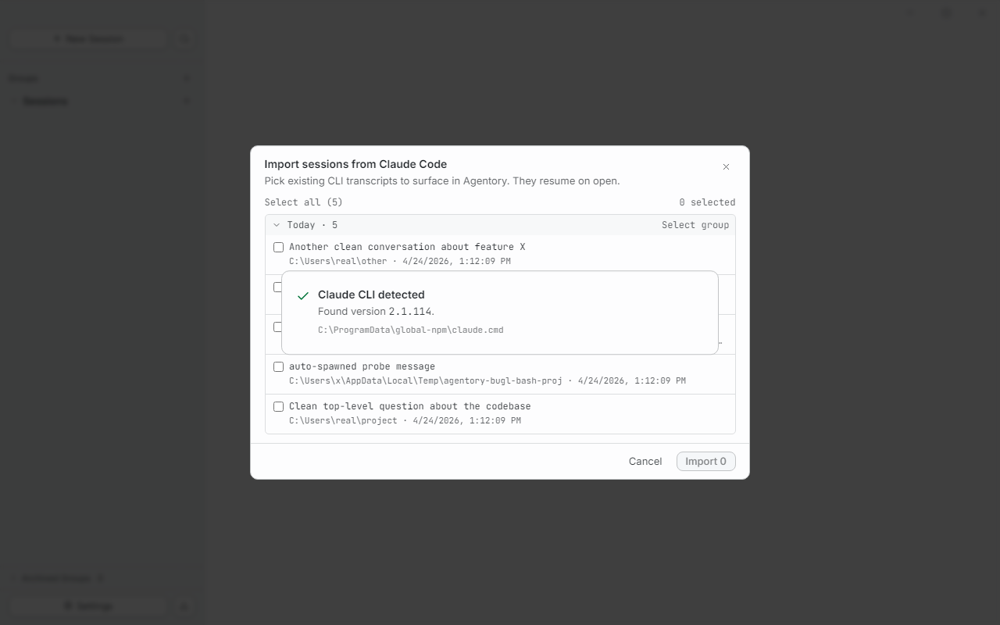
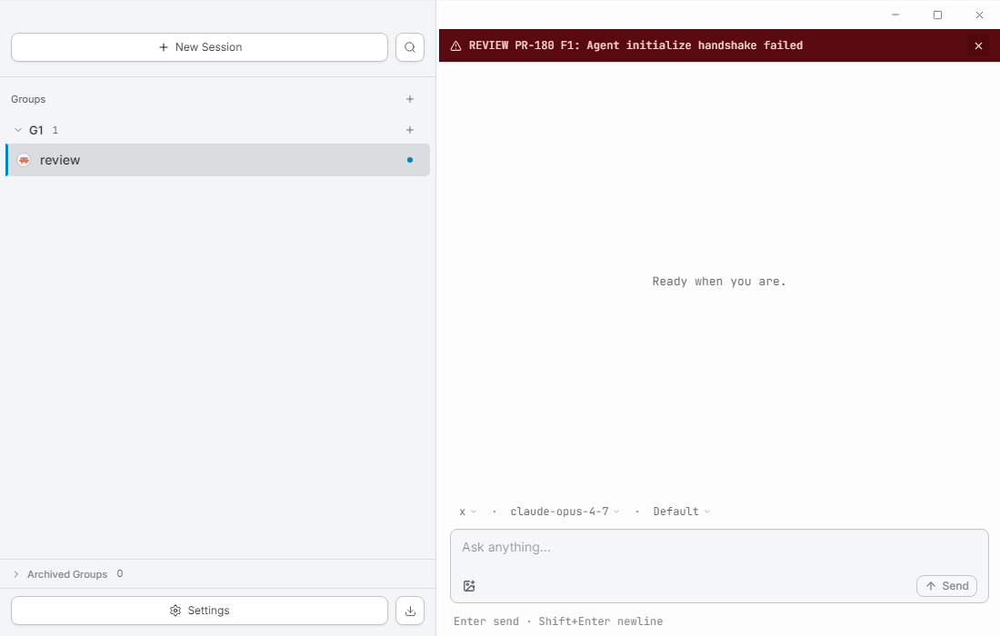
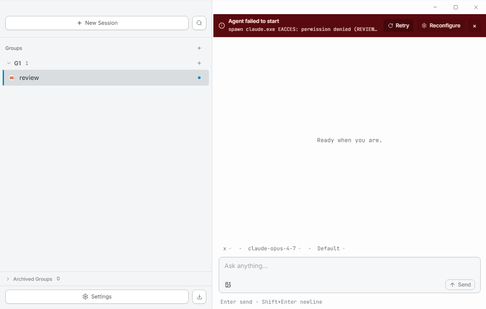
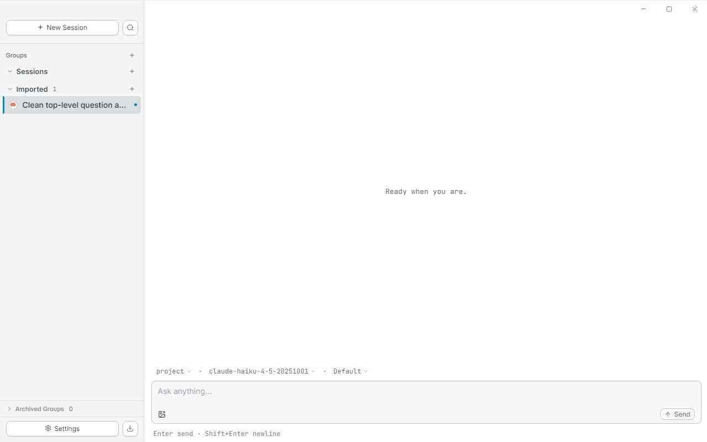

ccsm is a desktop GUI for Claude Code. Group parallel agent sessions across multiple repositories the way you actually work — by task, not by folder.

// why ccsm
Real engineering work spans multiple repos — your workspace should too. A group is a task; sessions inside it can live in any directory. No more browser-tab juggling between five terminal windows.
Same engine as the official CLI, packaged for daily-driver use.
Your claude install, your credentials, your
existing ~/.claude sessions — ccsm reads them
in place, doesn't fork them.
Permission prompts, plans, tool calls, edit diffs, terminal output — each renders as its own structured block. Not buried in a chat bubble, not stripped of ANSI color, not collapsed to a one-line summary you can't read.
// features
Drag sessions between groups. Collapse the ones you're not on. A breathing amber dot tells you which background agent needs your input — no manual "status" field to maintain.
Tool permission requests render where they happen, with the actual input visible as structured data. One click to approve, one to remember the decision for the rest of the session.


Terminal output preserves ANSI color. Edits show as diffs. Plans render as checklists. Long tool calls collapse, but never truncate — the full output is one click away.
ccsm reads conversation history directly from
~/.claude/projects/. Nothing is duplicated,
nothing is migrated. Open ccsm, see the work you already did.

// get started
Grab the latest .exe from
Releases.
Windows 10 or later.
Standard installer. No admin needed. Roughly 200 MB on disk.
First-launch wizard auto-detects your claude binary.
Don't have one yet?
Install Claude Code first
— npm i -g @anthropic-ai/claude-code.
ccsm makes zero direct calls to Anthropic. All API traffic flows through
your local claude binary, with your existing credentials.
macOS and Linux builds are coming.